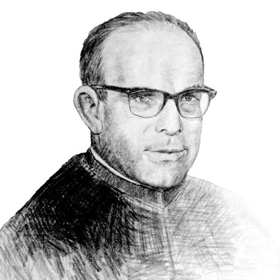
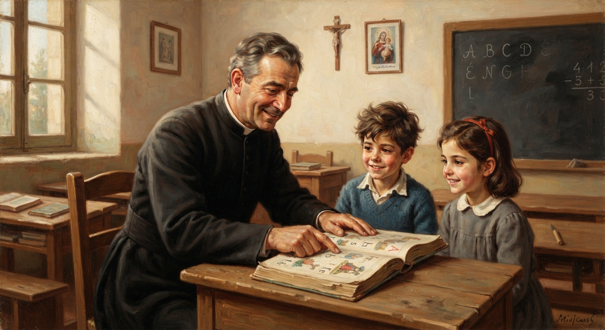
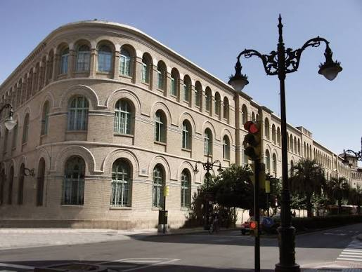

¿Quién fue Pedro Díez Gil?
Pedro Díez Gil de la Virgen del Carmen (1913-1983) fue un sacerdote y religioso escolapio español que dedicó gran parte de su vida a la educación de los niños y a ayudar a las personas necesitadas.
Se destacó por enseñar a leer y escribir a los más pequeños, transmitirles la fe y acompañar a enfermos, pobres y familias. El 20 de mayo de 2023 fue declarado Venerable por el papa Francisco.

1. Su vida
Pedro Díez Gil nació el 14 de abril de 1913 en Pampliega, Burgos, España. Su padre trabajaba en los ferrocarriles, por eso su familia vivió en diferentes lugares del país.
Fue sacerdote y religioso escolapio. Durante la Guerra Civil española sirvió como capellán militar hasta el final del conflicto. También enseñó a leer y escribir a los más pequeños y acompañó a distintas generaciones de alumnos.
Falleció el 14 de diciembre de 1983 en Zaragoza, España.
2. Su obra educativa y pastoral
Su trabajo como educador
Dedicó casi toda su vida religiosa a la educación de niños pequeños en el colegio Santo Tomás de Aquino de las Escuelas Pías de Zaragoza, entre los años 1935 y 1980.
Enseñaba principalmente a niños de cinco años a leer, escribir y rezar.
Junto al padre Joaquín Erviti Lazcano escribió cartillas y libros para iniciar a los niños en la lectura. Uno de los más conocidos fue "Chiquitín".
Su trabajo solidario
También dedicó parte de su tiempo a ayudar a enfermos, pobres y personas necesitadas. Colaboró con la Conferencia de San Vicente de Paúl.

3. Su testimonio
Las personas que lo conocieron destacan su sencillez, su entrega diaria a los niños y su cercanía con los enfermos y necesitados de la parroquia de San Pablo, en Zaragoza.
Era considerado un hombre de fe. Su vida estuvo marcada por la oración, la enseñanza y el servicio a los demás.
Su ejemplo demuestra que educar no significa solamente enseñar materias, sino también acompañar y ayudar a las personas.
4. Su legado
Pedro Díez Gil dejó un importante legado educativo y religioso. Durante muchos años acompañó a diferentes generaciones de niños y les enseñó sus primeros conocimientos de lectura y escritura.
También dejó el ejemplo de una vida dedicada a la fe, la solidaridad y la educación. Para las Escuelas Pías representa un modelo de educador que entendía la enseñanza como una forma de servicio.
Actualmente se encuentra sepultado en la Iglesia de Santo Tomás de Aquino de las Escuelas Pías de Zaragoza.

5. Su condición dentro de la historia de la Iglesia y de las Escuelas Pías
Su reconocimiento en la Iglesia
Dentro del proceso de canonización de la Iglesia católica, Pedro Díez Gil se encuentra en la etapa de Venerable Siervo de Dios.
El 20 de mayo de 2023 el papa Francisco reconoció sus virtudes heroicas y lo declaró Venerable.
Ser Venerable significa que la Iglesia reconoce que una persona vivió las virtudes cristianas de manera ejemplar. Es una etapa del camino hacia la canonización, pero no significa que ya haya sido declarado santo.
Su relación con las Escuelas Pías
Perteneció a la Orden de los Clérigos Regulares Pobres de la Madre de Dios de las Escuelas Pías, conocida como los escolapios.
Esta orden fue fundada por San José de Calasanz en Roma, en el siglo XVII. Su principal misión es brindar educación a los niños, especialmente a los más pobres.
La vida de Pedro Díez Gil representa estos valores porque dedicó muchos años a enseñar, acompañar y ayudar a los demás.
6. Línea del tiempo
- 14 de abril de 1913: Nace en Pampliega, Burgos, España.
- 1935: Comienza su período de dedicación educativa en el colegio Santo Tomás de Aquino de Zaragoza.
- Durante la Guerra Civil española: Sirve como capellán militar y enseña a leer y escribir a los niños.
- 1935-1980: Desarrolla gran parte de su trabajo educativo en las Escuelas Pías de Zaragoza.
- 14 de diciembre de 1983: Fallece en Zaragoza.
- 20 de mayo de 2023: Es declarado Venerable por el papa Francisco.
7. Fuentes de información
Para realizar este trabajo se utilizaron las siguientes fuentes:
8. Quiz: ¿Cuánto aprendiste?
Respondé las siguientes preguntas para comprobar cuánto aprendiste sobre Pedro Díez Gil.